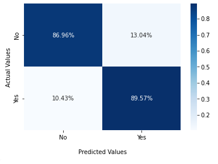

The Naive Bayes classifier is a data modeling method based on applying Thomas Bayes' theorem to classify data. Although simple, Naive Bayes classifiers are usually able to produce high accuracy levels.
Naive Bayes Results
Our initial result had an accuracy score of 84% and a recall score of 83%. In order to improve the results, we utilized a heat map. After that, our final accuracy score was 85% with a recall score of 85%.
Random Forest
Random Forest models are used to predict a certain outcome by splitting the data by using simple questions.
Random Forest Results
Our initial result had an accuracy score of 88% and a recall score of 89%. We did a GridSearch to improve our confusion matrix and ended up with an accuracy score of 88.5% and a recall score of 92%.

SVM (Support-Vector Machine)
Support-vector machines are supervised machine learning models that use classification algorithms for two-group classification problems.
SVM Results
Our initial result had an accuracy score of 74% and a recall score of 71%. To increase our accuracy and recall levels, we did implemented GridSearch. This helped us achieve higher scores of 88% (accuracy) and 88% (recall).